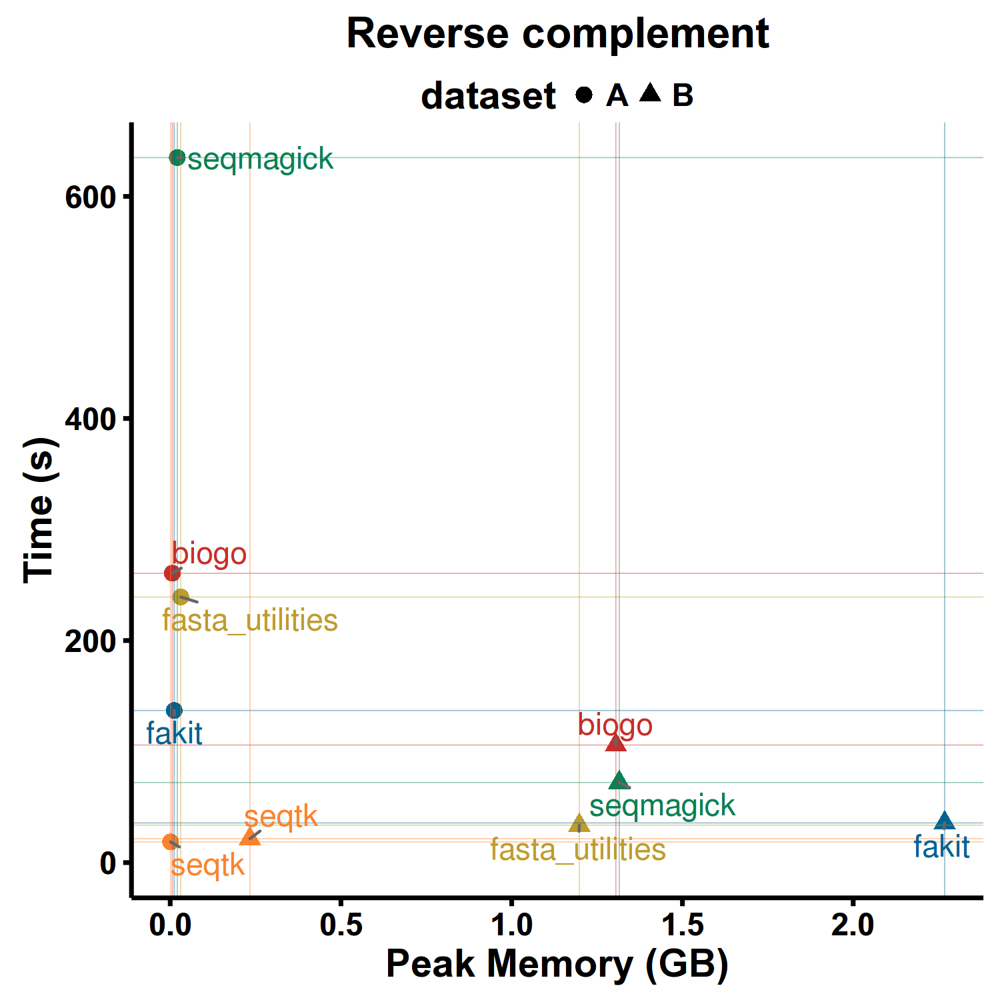
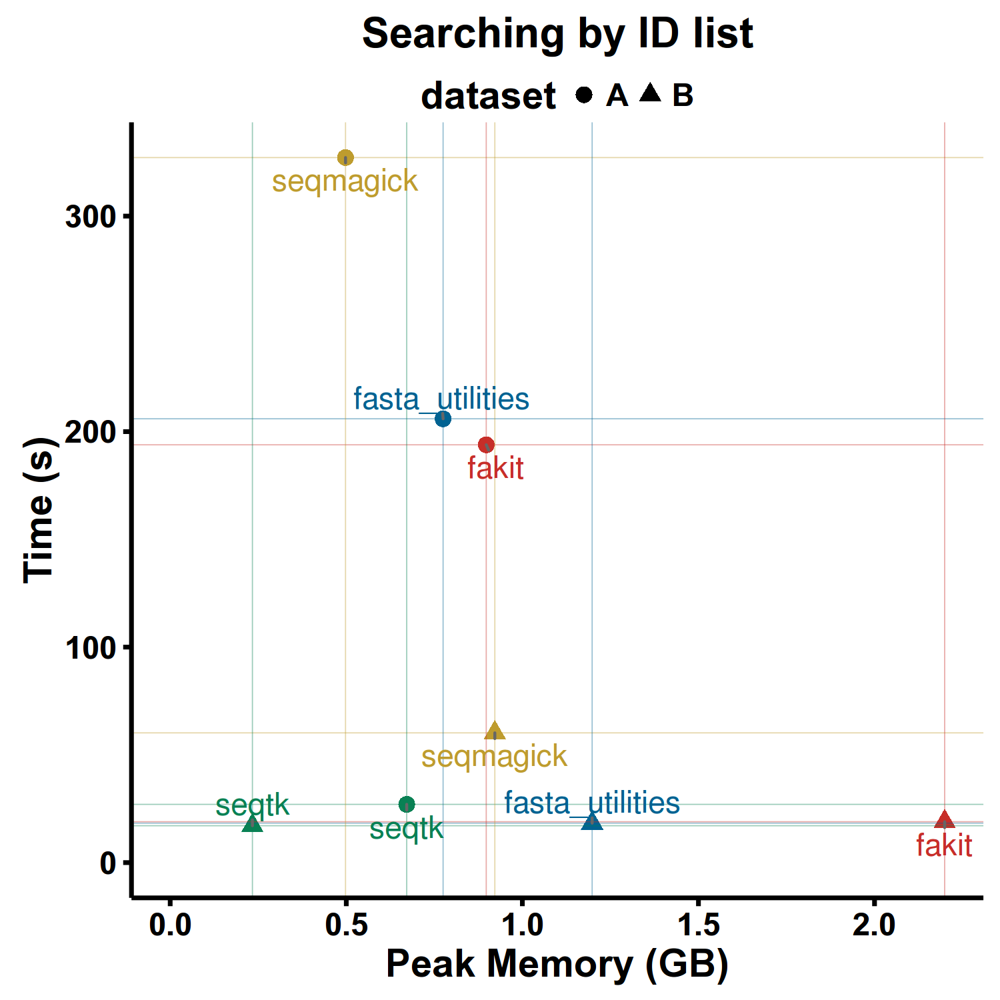
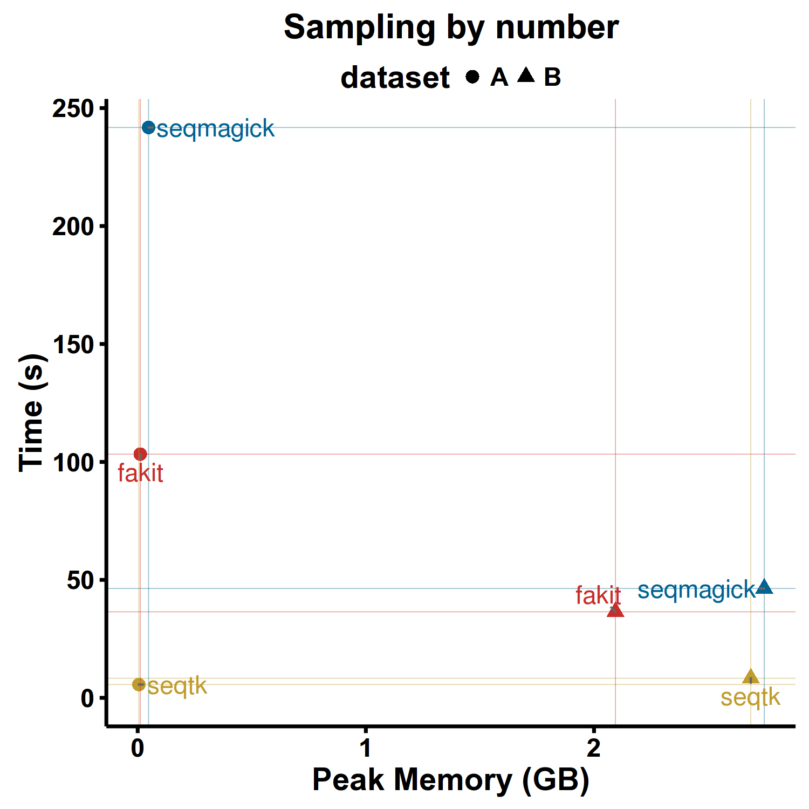
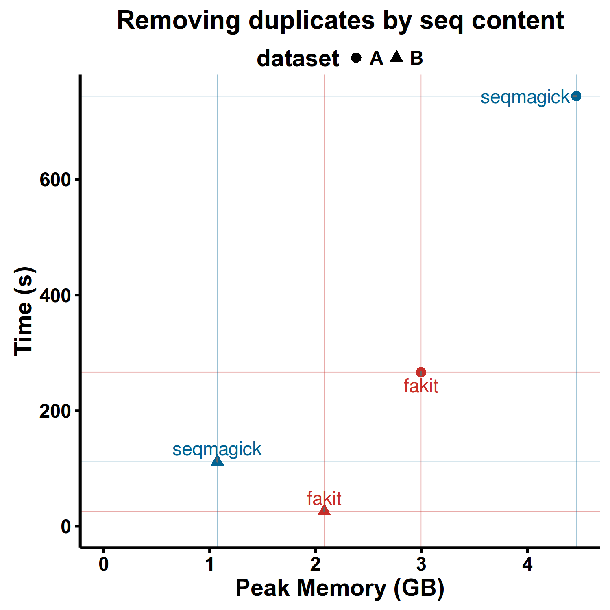
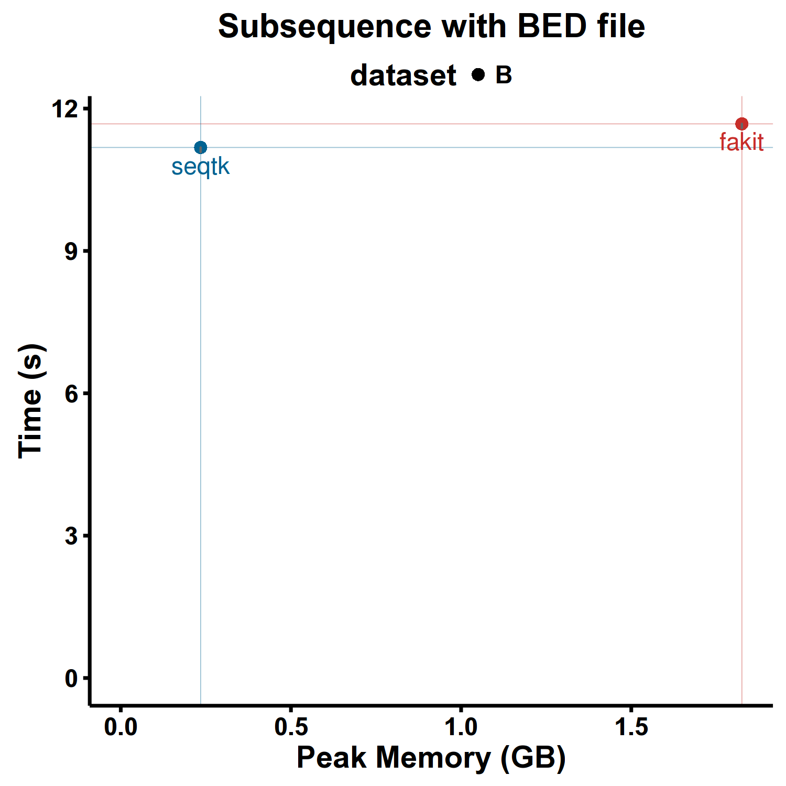

Benchmark
Softwares
- fakit. (Go). Version v0.1.9.
- fasta_utilities. (Perl). Version 3dcc0bc. Lots of dependencies to install_.
- fastx_toolkit. (Perl). Version 0.0.13. Can't handle multi-line FASTA files_.
- seqmagick. (Python). Version 0.6.1
- seqtk. (C). Version 1.0-r82-dirty.
Not used:
- pyfaidx. (Python). Version 0.4.7.1. not used, because it exhausted my memory (10G) when computing reverse-complement on a 5GB fasta file of 250 bp.
Features
| Features | fakit | fasta_utilities | fastx_toolkit | pyfaidx | seqmagick | seqtk |
|---|---|---|---|---|---|---|
| Cross-platform | Yes | Partly | Partly | Yes | Yes | Yes |
| Mutli-line FASTA | Yes | Yes | -- | Yes | Yes | Yes |
| Validate bases | Yes | -- | Yes | Yes | -- | -- |
| Recognize RNA | Yes | Yes | -- | -- | Yes | Yes |
| Read STDIN | Yes | Yes | Yes | -- | Yes | Yes |
| Read gzip | Yes | Yes | -- | -- | Yes | Yes |
| Write gzip | Yes | -- | -- | -- | Yes | -- |
| Search by pattern | Yes | Yes | -- | -- | Yes | Yes |
| Sample seqs | Yes | -- | -- | -- | Yes | Yes |
| Subseq | Yes | Yes | -- | Yes | Yes | Yes |
| Deduplicate seqs | Yes | Partly | -- | -- | Partly | -- |
| Split seqs | Yes | Yes | -- | Partly | -- | -- |
| Split by seq | Yes | -- | Yes | Yes | -- | -- |
| Shuffle seqs | Yes | -- | -- | -- | -- | -- |
| Sort seqs | Yes | Yes | -- | -- | Yes | -- |
| Locate motifs | Yes | -- | -- | -- | -- | -- |
| Common seqs | Yes | -- | -- | -- | -- | -- |
| Clean bases | Yes | Yes | Yes | Yes | -- | -- |
| Transcribe | Yes | Yes | Yes | Yes | Yes | Yes |
| Translate | -- | Yes | Yes | Yes | Yes | -- |
| Size select | Indirect | Yes | -- | Yes | Yes | -- |
| Rename head | Yes | Yes | -- | -- | Yes | Yes |
Datasets
dataset_A.fa - large number of short sequences
to be updated.
dataset_B.fa - small number of large sequences
Human genome from ensembl
- Genome DNA:
Homo_sapiens.GRCh38.dna_sm.primary_assembly.fa.gz - GTF:
Homo_sapiens.GRCh38.84.gtf.gz - BED:
Homo_sapiens.GRCh38.84.bed.gzwas converted fromHomo_sapiens.GRCh38.84.gtf.gzbygtf2bedwith commandzcat Homo_sapiens.GRCh38.84.gtf.gz | gtf2bed --do-not-sort | gzip -c > Homo_sapiens.GRCh38.84.bed.gz
to be updated.
Platform
PC:
- CPU: Intel Core i5-3320M @ 2.60GHz, two cores/4 threads
- RAM: DDR3 1600MHz, 12GB
- SSD: SAMSUNG 850 EVO 250G, SATA-3
- OS: Fedora 23 (Scientific KDE spin), Kernal: 4.4.7-300.fc23.x86_64
Softwares:
- Perl: perl 5, version 22, subversion 1 (v5.22.1) built for x86_64-linux-thread-multi
- Python: Python 2.7.10 (default, Sep 8 2015, 17:20:17) [GCC 5.1.1 20150618 (Red Hat 5.1.1-4)] on linux2
Automatic benchmark and plotting scripts
Scripts are available at: https://github.com/shenwei356/fakit/tree/master/benchmark
One round test takes ~70 min, so only all tests were only repeated 1 times.
Test 1. Reverse Complement
Test 2. Extract sequencs by ID list
Test 3. Sampling by number
Test 4. Removing duplicates by seq content
Test 5. Subsequence with BED file
Result




